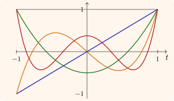

8.4 Legendre polynomials
Legendre’s equation \[ (1 - t^2)y'' - 2ty' + n(n + 1)y = 0 \] arises from the Laplacian in spherical coordinates, with \(t = \cos \theta \). The points \(t = \pm 1\) are regular singular points, and \(t = 0\) is ordinary, so by Theorem 8.1.1 the series solutions at \(0\) converge for \(|t| < 1\). The recursion is \[ a_{k+2} = \frac {k(k + 1) - n(n + 1)}{(k + 1)(k + 2)}a_k = \frac {(k - n)(k + n + 1)}{(k + 1)(k + 2)}a_k . \] When \(n\) is a non-negative integer, the factor \(k - n\) vanishes at \(k = n\), and one of the two series (the even one if \(n\) is even, the odd one if \(n\) is odd) terminates: it is a polynomial of degree \(n\). The other series diverges at \(t = \pm 1\). The polynomial normalised by \(P_n(1) = 1\) is the Legendre polynomial; it is the only solution bounded on \([-1, 1]\), which is why physically meaningful solutions on a sphere require integer \(n\).
- (i)
- (Rodrigues) \(P_n(t) = \frac {1}{2^nn!}\frac {d^n}{dt^n}(t^2 - 1)^n\).
- (ii)
- (Orthogonality) \(\int _{-1}^1P_m(t)P_n(t)\,dt = 0\) for \(m \neq n\), and \(\int _{-1}^1P_n^2\,dt = \frac {2}{2n + 1}\).
- (iii)
- (Generating function) \((1 - 2tz + z^2)^{-1/2} = \sum _{n=0}^\infty P_n(t)z^n\) for \(|z|\) small.
Proof. (i) Let \(u = (t^2 - 1)^n\), so \((t^2 - 1)u' = 2ntu\). Differentiating \(n + 1\) times by Leibniz’s rule gives \[ (t^2 - 1)u^{(n+2)} + 2(n + 1)tu^{(n+1)} + n(n + 1)u^{(n)} = 2ntu^{(n+1)} + 2n(n + 1)u^{(n)} , \] that is \((1 - t^2)w'' - 2tw' + n(n + 1)w = 0\) for \(w = u^{(n)}\). So \(u^{(n)}\) is a polynomial solution of degree \(n\), a multiple of \(P_n\). At \(t = 1\), writing \(u = (t - 1)^n(t + 1)^n\), only the term in which all \(n\) derivatives fall on \((t - 1)^n\) survives, giving \(u^{(n)}(1) = n!\,2^n\), which fixes the constant.
(ii) Write the equation in the form \(\bigl ((1 - t^2)P_n'\bigr )' + n(n + 1)P_n = 0\). Multiply by \(P_m\), subtract the same with \(m\) and \(n\) exchanged, and integrate over \([-1, 1]\): \[ \bigl [(1 - t^2)(P_mP_n' - P_nP_m')\bigr ]_{-1}^1 + \bigl (n(n + 1) - m(m + 1)\bigr )\int _{-1}^1P_mP_n\,dt = 0 . \] The boundary term vanishes because \(1 - t^2 = 0\) at \(\pm 1\), so the integral is zero when \(m \neq n\). The value of \(\int P_n^2\) follows from (i) by integrating by parts \(n\) times (Problem 8.6.5).
(iii) The left side is analytic in \(z\) near \(0\), so it has an expansion \(\sum c_n(t)z^n\); one checks from the differential equation satisfied by \((1 - 2tz + z^2)^{-1/2}\) in \(t\) that each \(c_n\) solves Legendre’s equation and is a polynomial of degree \(n\), and at \(t = 1\) the left side is \((1 - z)^{-1} = \sum z^n\), so \(c_n(1) = 1\) and \(c_n = P_n\). □
Part (ii) is the first appearance of a general principle: the solutions of an equation of the form \((ry')' + \lambda wy = 0\) with suitable boundary conditions are orthogonal. That principle is Sturm–Liouville theory, the subject of the next section, and it is why Legendre polynomials and Bessel functions can be used to expand arbitrary functions, as sines and cosines are in Fourier series (Figure 12).

Questions on this section
Stuck on something here? Ask below and it stays attached to this topic.